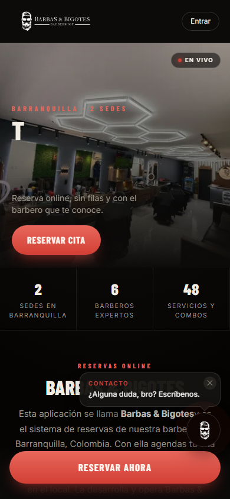
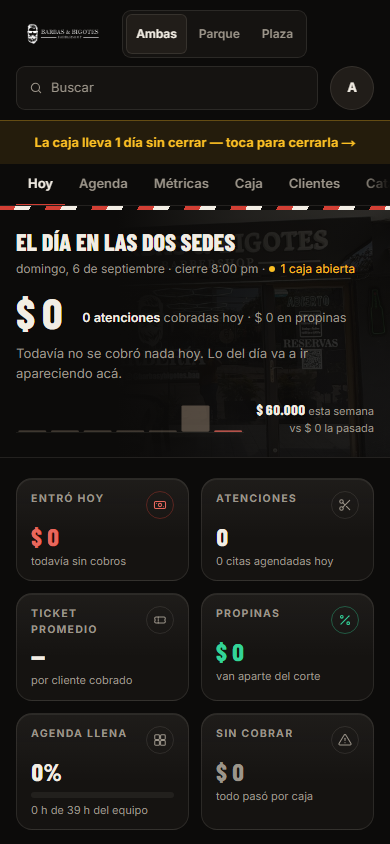
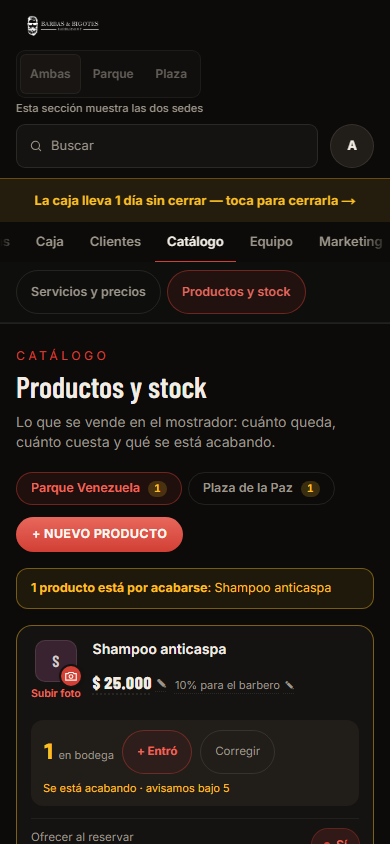
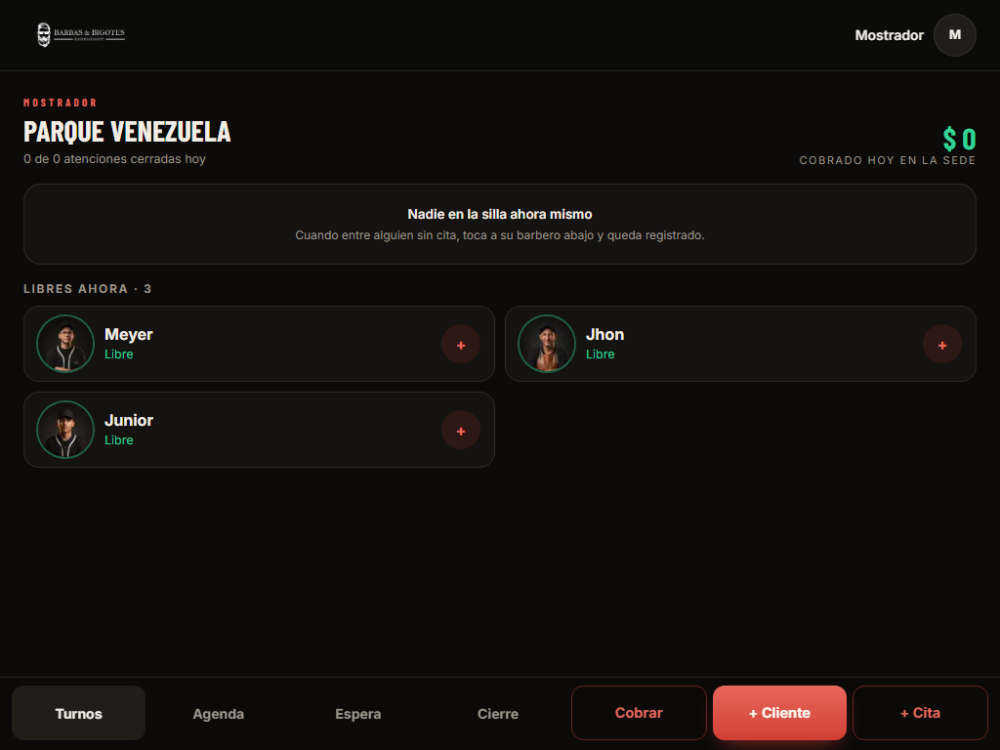

Medida en producción el 6 de septiembre de 2026 · 18 pantallas × celular (390 px) y escritorio o tablet · con las sesiones reales de admin y mostrador. Los números salen de instrumentos, no de opinión.
Targets < 40 px = botones, enlaces y controles con alguno de sus lados menor a 40 px (la referencia es 44 px). Texto < 12 px = elementos con texto propio en menos de 12 px. Cromo = píxeles desde arriba hasta el primer título de la pantalla en celular. Sin desborde horizontal y sin errores de consola en las 36 mediciones.
| Pantalla (celular) | Targets < 40 px | Texto < 12 px | Cromo | Lo que pesa |
|---|---|---|---|---|
| Público · Home | 10 de 25 | 13 % | 72 px | Enlaces del pie de 15–19 px de alto; página de 5.980 px. |
| Público · Reservar (servicio) | 0 de 16 | 43 % | 100 px | Etiquetas “PRECIO”, duración “30M” y contadores de categoría en 10–11 px. |
| Público · Barberos | 5 de 14 | 44 % | 157 px | Mismo pie chico; texto secundario pequeño. |
| Mostrador · Turnos / Agenda | 1 de 12 | 8 % | 118 px | Solo el logo. Bien. |
| Mostrador · Cierre | 1 de 11 | 0 % | — | Bien. |
| Admin · Hoy | 1 de 22 | 38 % | 230 px | Etiquetas de KPI en 10–11 px; “$ 0” en rojo lee como alerta. |
| Admin · Agenda | 1 de 27 | 34 % | 250 px | Cabecera larga. |
| Admin · Caja (cuadre) | 17 de 52 | 23 % | 307 px | Chips de categoría y de medio a 38 px; página de 3.800 px. |
| Admin · Clientes | 6 de 46 | 19 % | 250 px | Filtros a 34 px; botón “Registrar cliente” a 35 px. |
| Admin · Servicios y precios | 22 de 78 | 49 % | 311 px | “Suma sello” y “Desactivar” a 31 px en cada fila. |
| Admin · Productos y stock | 12 de 70 | 56 % | 368 px | Toggles “Sí” a 32 px; “10 % para el barbero”, “Subir foto”, avisos de stock en 11 px. |
| Admin · Equipo | 23 de 52 | 24 % | 368 px | “Cambiar PIN” y “Perfil” a 36 px × 6 barberos. |
| Admin · Liquidación | 1 de 24 | 41 % | 311 px | Tabla con mucho texto secundario chico. |
| Admin · Avisos | 3 de 34 | 11 % | 368 px | Dos interruptores sin nombre accesible. |
| Admin · Horarios | 34 de 63 | 7 % | 368 px | Casilla de 13 px, selectores de hora a 32–34 px; el horario queda debajo de las fotos de sede. |




| Hallazgo | Peso | Recomendación |
|---|---|---|
| La cabecera ocupa 230–368 px antes del contenido: logo, selector de sede, la línea “Esta sección muestra las dos sedes”, buscador, banner amarillo de caja, pestañas y subpestañas. | Crítico | Una sola fila: logo, selector de sede compacto y buscador como ícono. El banner de caja pasa a ser un chip en el título (y a pantalla completa solo en Hoy y Caja). Fuera la línea explicativa. Meta medible: de 368 a ~140 px. |
| Entre 31 y 38 px: chips de gasto y de medio (38), filtros de clientes (34), “Suma sello” / “Desactivar” (31), “Cambiar PIN” (36), toggles “Sí” (32), selectores de horario (32–34), casilla de 13 px en Horarios. | Crítico | Todo control a 44 px de alto. Un solo componente de interruptor con etiqueta para “Sí/No”, “Suma sello” y los de Avisos (que además no tienen nombre accesible). |
| Textos de 10–11 px en mayúscula con espaciado (eyebrows, etiquetas de KPI, “10 % para el barbero”, avisos de stock). En Productos son el 56 % de los textos. | Crítico | Mínimo 12 px para etiquetas y 13 px para texto secundario. Las mayúsculas espaciadas solo en el eyebrow de sección. |
| El rojo hace cinco trabajos: marca, plata (“$ 0 entró hoy”), enlaces de acción (“Cuadre manual”, “+ Gasto”), estado “Sí” y alerta. | Moderado | Plata en blanco/neutro, rojo solo para la acción principal, ámbar para alertas, verde solo para “cuadró / activo”. |
| Hoy arranca con una foto de fondo y un “$ 0” enorme; lo accionable (pendientes por cobrar, caja sin cerrar, barberos sin correo) queda abajo o en otras pantallas. El sparkline sin datos se dibuja plano. | Moderado | Arriba un bloque “Para hacer hoy” (3 líneas con enlace directo), luego los KPI en dos filas compactas; sin sparkline hasta tener 7 días de datos. |
| Horarios muestra primero “La foto de cada sede” y el horario semanal después. | Moderado | El horario primero; las fotos a una sección “Sedes” (con dirección y teléfono, hoy repartidos en tres lugares). |
| Cuadre es una página de 3.800 px: pendientes, corte del día, bitácoras, cuadres anteriores y los formularios a la derecha. | Menor | Pestañas internas “Hoy · Bitácora · Anteriores” o secciones plegadas; los formularios de gasto y adelanto como hoja que sube (patrón del mostrador). |
| Hallazgo | Peso | Recomendación |
|---|---|---|
| En la tarjeta del barbero libre, el gesto es el “+” chico de la derecha; la tarjeta entera parece tocable y no lo es. | Moderado | Toda la tarjeta registra el walk-in; el “+” se queda como refuerzo visual. |
| Cobrar una cita son tres toques (tarjeta → hoja → cobrar) y el 95 % de las veces no se cambia nada. | Moderado | Botón “Cobrar $ 35.000 · Efectivo” en la tarjeta de la cita con el medio que ese cliente usa siempre; “cambiar” abre la hoja completa. De 3 toques a 1. |
| En tablet apaisada la mitad derecha de Turnos queda vacía mientras la lista de espera y los pendientes viven en otras pestañas. | Menor | A partir de 1024 px: dos columnas, turnos a la izquierda y espera + pendientes por cobrar a la derecha. |
| Agendar pide barbero, servicio, día, hora, nombre y teléfono aunque el cliente sea de siempre. | Menor | Buscar el cliente primero y ofrecer “igual que la última vez” (barbero y servicio precargados): de seis campos a dos. |
| Hallazgo | Peso | Recomendación |
|---|---|---|
| El titular de la home se escribe letra por letra: en un celular de gama media la primera pantalla muestra una “T” sola varios segundos, y el widget de contacto (“¿Alguna duda, bro?”) se abre encima del texto en el primer scroll. | Crítico | Titular completo desde el primer cuadro (animar solo el acento o el subrayado); el widget aparece cerrado y solo se abre al tocarlo, o después de 20 s. |
| El párrafo “Esta aplicación se llama Barbas & Bigotes y es el sistema de reservas…” está escrito para buscadores e IA y un humano lo lee raro justo debajo del hero. Dos botones “Reservar” seguidos. | Moderado | Dejar ese texto para las máquinas en un bloque discreto al final (o en el pie) y aquí una frase de marca. Un solo CTA por pantalla. |
| La home mide 5.980 px en celular y Barberos 5.109 px. | Moderado | Recortar a lo que decide: reservar, sedes, barberos, reseñas. Lo demás, a Nosotros. |
| En Reservar, la tarjeta de “Cerquillos” muestra una foto de un brazo robótico industrial (imagen de archivo) y varios servicios llevan el ícono genérico de tijera. | Moderado | Foto real por servicio (ya se pueden subir desde Catálogo); mientras no haya, un ícono de marca, nunca una foto ajena. |
| En Reservar, etiquetas “PRECIO”, “30M” y contadores de categoría en 10–11 px (43 % de los textos). | Menor | Precio en 15 px y duración en 12 px dentro de la tarjeta; los contadores fuera del chip. |
| Pie de página con enlaces de 15–19 px de alto (teléfonos, privacidad, términos). | Menor | Enlaces a 44 px o agrupados en dos botones (“Llamar”, “WhatsApp”). |
| Elemento | Hoy hay | Propuesta |
|---|---|---|
| Interruptor Sí/No | Toggle “Sí” rojo de 47×32 (Productos), switch verde (Avisos), pill “Suma sello / No suma sello” (Servicios). | Un solo componente Switch con etiqueta a la izquierda, 44 px, verde = activo. |
| Elegir sede | Segmentado en la cabecera, chips “Parque Venezuela 1 · Plaza de la Paz 1” en Productos, selector en los formularios de Caja. | Solo el segmentado de la cabecera; las pantallas obedecen a ese valor. |
| Editar un dato | Precio y comisión inline con lápiz; nombre y descripción en formularios; stock con “+ Entró / Corregir”. | Inline con lápiz para todo dato corto (precio, comisión, duración, correo); formulario solo para altas. |
| Botones del mismo grupo | Degradado, contorno rojo y contorno gris conviven (mostrador, agenda). | Primario = degradado; secundario = contorno gris; el contorno rojo desaparece. |
| Etiquetas de sección | Eyebrow rojo en mayúsculas de 10–12 px, con y sin espaciado. | Un solo estilo a 12 px, y solo uno por pantalla. |
| # | Cambio | Esfuerzo | Cómo se mide |
|---|---|---|---|
| 1 | Cabecera del admin a una fila + banner de caja como chip + fuera la línea explicativa. | 1 día | Cromo en celular: de 230–368 px a ≤ 140 px en las 12 pantallas. |
| 2 | Tipografía mínima 12/13 px en todo el panel y en Reservar. | ½ día | Texto < 12 px: de 38–56 % a menos de 10 %. |
| 3 | Controles a 44 px y un solo Switch (chips, pills, toggles, selectores de horario, casilla, filtros, “Registrar cliente”). Nombres accesibles en los interruptores. | ½ día | Targets < 40 px: de 130 a 0 en el panel. |
| 4 | Semántica del color: plata neutra, rojo solo acción, ámbar alerta. | 1 día | Ningún monto en rojo; una sola alerta ámbar por pantalla. |
| 5 | Hoy del admin: “Para hacer hoy” arriba, KPI en dos filas, sin sparkline vacío. | 1 día | Lo accionable visible sin scroll en un celular de 844 px. |
| 6 | Home: titular completo, widget cerrado, un CTA por pantalla, texto para máquinas al final, página más corta. | 1 día | Titular legible en el primer cuadro; página < 3.500 px. |
| 7 | Mostrador a un toque: tarjeta del barbero entera tocable; “Cobrar $ X · medio” en la cita; dos columnas en tablet. | 1 día | Cobrar una cita: de 3 toques a 1. |
| 8 | Reservar: foto real o ícono de marca por servicio (fuera la foto del robot); precio y duración legibles. | ½ día | Cero imágenes de archivo ajenas; texto < 12 px bajo 10 %. |
| 9 | Horarios y Sedes: el horario primero; dirección, teléfono y foto de cada sede en un solo lugar (hoy viven en tres). | ½ día | Una fuente de verdad para la dirección. |
Los puntos 1 a 3 son dos días de trabajo y se notan en cada pantalla del admin; propongo empezar por ahí y medir con el mismo arnés antes y después.
Método: arnés Playwright contra producción (auditoria-front.py), 18 pantallas en 390 × 844 y en 1280 × 900 o 1024 × 768, sesiones reales de admin y mostrador; contraste medido en la auditoría del 14 de agosto. Preparado por Claude para FourG Solutions.